En 1943 y tan solo cuatro años de la aparición estelar de Batman en los cómics, se estrenó en la televisión estadounidense una serie basada en el héroe de Gótica y el encargado de darle vida a este personaje por primera vez en la pantalla chica fue el actor Lewis Wilson. Durante 15 episodios, Wilson se puso el traje e interpretó a Bruce Wayne, solo que su función no era precisamente el de agarrarse a catorrazos con el mal de su ciudad.
Resulta
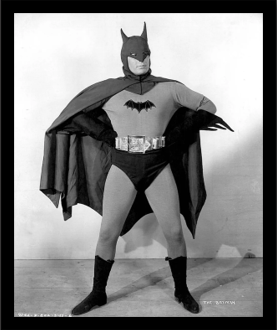
No fue hasta 1949 cuando Batman regresó a la pantalla chica, solo que en esta ocasión no fue de la mano de Lewis Wilson. En aquel año, Robert Lowery se encargó de tomar el papel del hombre murciélago en otra serie televisiva llamada Batman & Robin, que en realidad sería una secuela de la que apareció seis años antes y que tuvo una buena recepción en general, pero que no logró atrapar al público de la forma en que querían.
A diferencia de la versión anterior, en esta ocasión, Batman deja de ser un agente para hacer lo que mejor sabe, enfrentarse a los villanos. En esta ocasión el malo es el Mago, un sujeto encapuchado con un dispositivo eléctrico que controla los coches y que además les pone retos a sus enemigos. ¡Al final, logran dar con su identidad secreta –muy a la Scooby Doo! – y aunque aún no mostraban las historias de los cómics, sí se acercaron un poco.
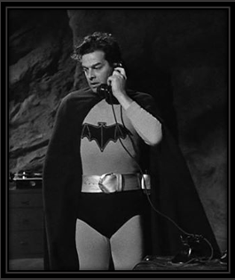
Tuvieron que pasar casi tres décadas para que Batman volviera a la televisión y de qué manera. En esta ocasión, Adam West dio vida a Bruce Wayne en una serie que se convirtió en un ícono de la cultura pop y para muchos, esta fue la primera versión que conocieron del héroe de Gótica y la definitiva. Por si esto no fuera suficiente, aquí también aparecieron personajes importantísimos como el Joker, el Acertijo, Catwoman, el Pingüino, Alfred, el comisionado Gordon.
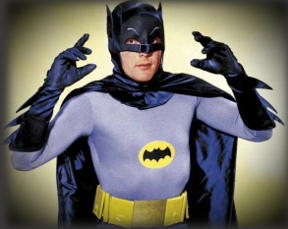
Luego del enorme éxito de Adam West como Batman, dejó la vara muy alta para aquellos que quisieran interpretar a este personaje. En 1989 y tras varios años de descansar a este superhéroe, Tim Burton quedó a cargo de la primera película del hombre murciélago y para el papel principal escogió a uno de los mejores actores del momento, ni más ni menos que Michael Keaton, quien nos regaló una interpretación espectacular.
Tres años después, Burton y Keaton volverían para Batman Returns –vaya la redundancia– en donde una vez más, demostraron que entendían muy bien a Bruce Wayne y su álter ego. Aunque no regresaron para la tercera cinta, ambos le dieron el toque maduro y serio que el héroe de Gótica se merecía, pero también sentaron las bases para lo que vendría en el futuro… a pesar de que hubo uno que otro descalabro que no nos gusta recordar.
Michael regresaría para hacer gritar a todos Fans de la emoción en la película de The Flash demostrando que es un Batman jodidamente increíble.
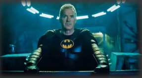
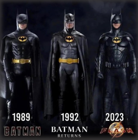
Como ya lo comentábamos antes, Michael Keaton y Tim Burton hicieron un excelente trabajo con el Batman que construyeron en la pantalla grande. Sin embargo, por distintas razones el actor no regresó para la siguiente película que planeaba Warner Bros. y su lugar como Bruce Wayne lo tomó Val Kilmer, quien a mediados de los 90 gozaba de una gran popularidad y todo pintaba para que fuera todo un éxito en taquilla.
En esta cinta, Batman se enfrenta a un par de villanos icónicos, Dos Caras y el Acertijo, en una historia dirigida por Joel Schumacher y que equilibraba la oscuridad de Burton con un poco de comedia que vimos en la serie de los 60. Pero quizá la mayor crítica se la llevó el propio Kilmer, pues a pesar de que no hizo un mal papel, muchos fans y medios lo deshicieron porque consideraban que su interpretación era un retroceso para el personaje.
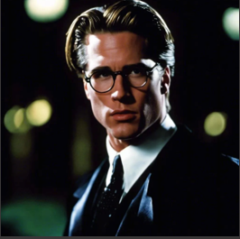
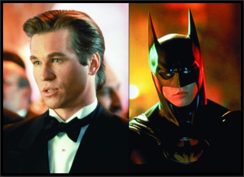
Después de la primera película dirigida por Joel Schumacher, Val Kilmer renunció a ser Batman en una secuela y por supuesto que las apuestas para tomar este icónico personaje estaban al por mayor. Al final, se decidieron por una de las estrellas más grandes de Hollywood en aquella época, ni más ni menos que George Clooney. Pero con lo que no contaban tanto él como los involucrados en Batman & Robin es que sería todo un desastre.
Si a Kilmer le llovió gacho, a Clooney le llegó un diluvio. Para empezar, fue fuertemente criticado el traje –que como recordarán, incluía los famosos batipezones que daban cringe–, pero también elementos como la batitarjeta de crédito, que le dieron un toque infantil al héroe de Gótica. Y ni qué decir de las actuaciones, pues a pesar de contar con un elenco de primera, todo el mundo destrozó el trabajo de los actores y la verdad es que con justa razón. George Clooney regreso como una cameo sorpresa al final de la película de The flash eso fue inesperado Barry realmente aloco el multiverso con esa línea de tiempo.
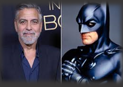
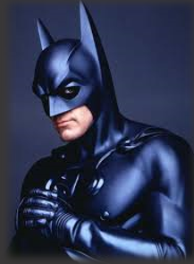
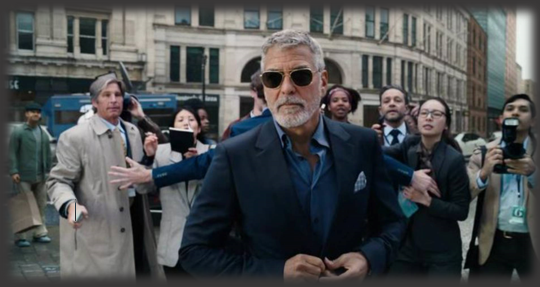
Luego del desastre que vino cuando Schumacher se hizo cargo de las películas de Batman, Warner Bros. decidió darle un descanso al personaje de DC en la pantalla grande. Sin embargo, a mediados de los 2000, Christopher Nolan se hizo cargo del héroe de Gótica y para darle vida una vez más en el cine, eligió a Christian Bale, quien venía demostrando hacer grandes interpretaciones y sobre todo, dejaba muy claro el compromiso que tenía con los papeles que tomaba.
El resultado fue una trilogía que muchos consideran como las mejores cintas de Batman que se han hecho hasta la fecha. Aunque hablando del trabajo de Bale, se encargó de interpretar versiones bastante realistas de Bruce Wayne y su álter ego, porque tiene ese tono oscuro que tanto les encanta a los fans del hombre murciélago, pero también nos muestra ese lado atormentado y elegante que no habíamos visto hasta ese momento.
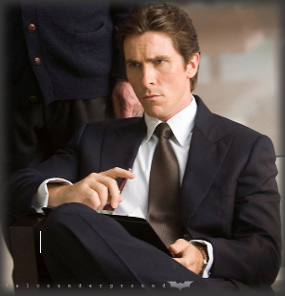
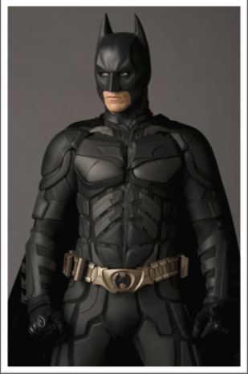
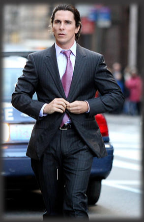
Después de que Nolan y Christian Bale cerraran su historia de Batman, Warner quería retomar a este personaje tan querido. Es por eso que en una decisión que causó polémica, nombraron a Ben Aflleck como su nuevo Bruce Wayne. Y vaya que esta noticia dio de qué hablar, pues muchos criticaron que el actor no tuviera ni el físico y mucho menos el conocimiento sobre el hombre murciélago que necesitaba para interpretar este papel tan importante.
Sin embargo, cayó unas cuantas bocas cuando se estrenó Batman v. Superman: Dawn of Justice, mostrando una versión del héroe de Gótica más parecida a los cómics de The Dark Knight, más grande y mucho más experimentado en su papel como héroe. Más tarde lo veríamos de nuevo con el traje y la capa en Justice League, pero debido a una serie de problemas personales, renunció a la película en solitario que protagonizaría y produciría.
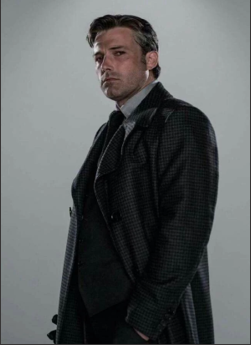
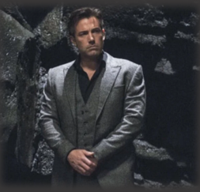
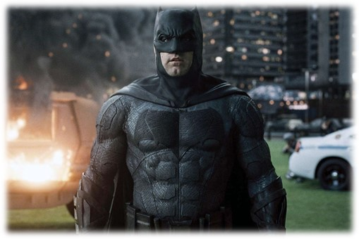
Luego de que Ben Affleck abandonara el proyecto de The Batman, Warner Bros. no lo dejó de lado. Al contrario, Matt Reeves continuó al frente de esta producción y así como sucedió con el actor anterior, hicieron enojar a miles de personas cuando confirmaron que Robert Pattinson sería el encargado de interpretar una vez más a Bruce Wayne en la pantalla grande (ya saben, porque para muchos, sigue siendo Edward Cullen de Crepúsculo).
Poco a poco, logró sorprender a los fans con los tráilers y avances que salieron de esta película y entregando un papel que no habíamos visto de Batman en la pantalla grande. Ahora, en lugar de solamente agarrarse a trancazos con los villanos –como el Acertijo y el Pingüino–, por primera vez vemos al hombre murciélago como un investigador de primera pero que, en el fondo, es un hombre roto y lleno de conflictos personales que busca venganza.
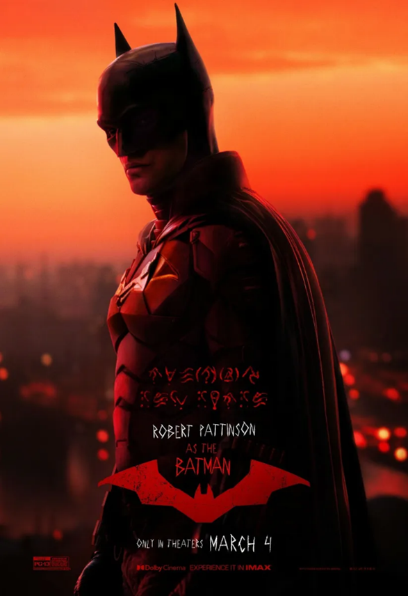
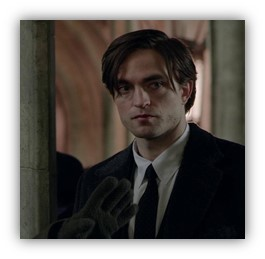
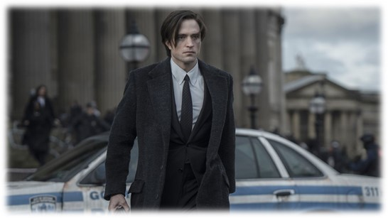